검증 · 시안 ↔ 실제
C안을 실제로 적용했습니다
아래 캡처는 전부 고친 앱을 375px 에서 실제로 찍은 것입니다
(시안 그림이 아닙니다). 화면마다 그 화면의 하네스를 돌려 가이드
앵커·요청·분기가 그대로인지 확인했습니다.
전체에 걸린 결정 — 점 패턴을 뺐습니다. SEED 기준으로 표면은
layer-default(흰) · fill · basement
세 단계뿐이라, 셸을 쓰는 여섯 화면과 온보딩·로그인에서
grid-bg 를 걷어냈습니다. 점이 깔리면 카드와 바탕의 층 차이가
흐려져 무엇이 위에 있는지 안 보입니다.
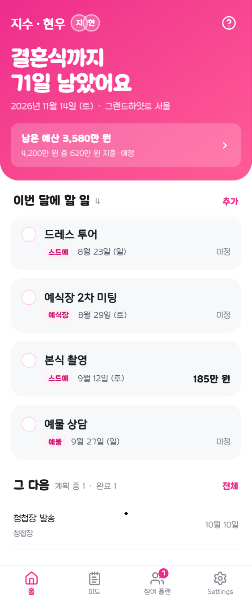
01
홈
/main
첫 스냅 구간이 통째로 화면 머리 면이 됐습니다.
예산 카드가 칠하던 그라데이션을 면이 맡고, 카드는 면을 파낸 흰 반투명
상자가 됩니다 — 같은 색 덩어리가 면 위에 또 뜨면 어느 쪽을 봐야 할지
알 수 없어집니다. D-day 알약도 분홍 위 분홍이라 흰 반투명으로 바꿨습니다.
목록을 시간으로 나눴습니다. 카테고리 칩 대신
목록 안에 지났어요 · 이번 달 · 다음 달 · 그 다음 · 날짜 미정
머리글을 냅니다 — 새 조작을 만들지 않아 한 번에 다 보입니다.
그리고 기본 정렬을 다가오는 순으로 바꿨습니다. 예전 기본값은
최신순이라 지난 일정이 목록 맨 아래에 묻혀 있었습니다(캡처의
"지났어요 · 확인해 주세요" 두 건이 그것입니다).
가이드 앵커 5폭 전부 정상스냅 경계·초대 띠 유지시간 머리글 · 다가오는 순
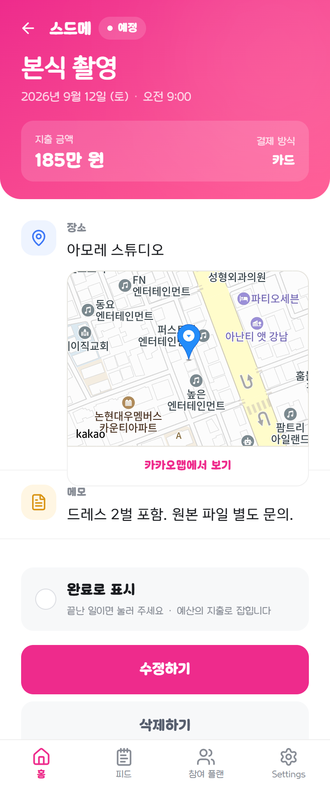
06
일정 상세
/schedule-detail
히어로가 떠 있는 카드에서 화면 머리 면으로.
회전 주황 스티커 → 상태 알약. 없던 완료로 표시를 냈습니다 —
"끝났나?"를 판단할 정보가 다 여기 있는데 상태는 여기서 못 바꿨습니다.
plan-board.cjs 통과상태 표시=NORMAL
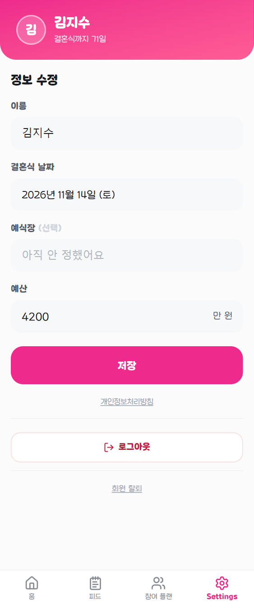
09
프로필
/user
폰만 분홍 머리 면, ≥768 은 흰 머리글 띠 그대로.
갈 곳 없던 X 제거, D-day 를 문장으로, 입력 칸을
SEED 채움 필드로.
misc-pages.cjs 통과
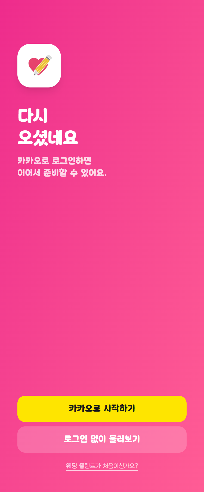
11a
로그인
/login
문이라 면을 화면 전체로 폈습니다. 점 패턴과
뿌연 원 두 개를 걷어냈습니다. 카카오 노랑은 그대로 — 카카오가 정한 색입니다.
session-entry.cjs 통과
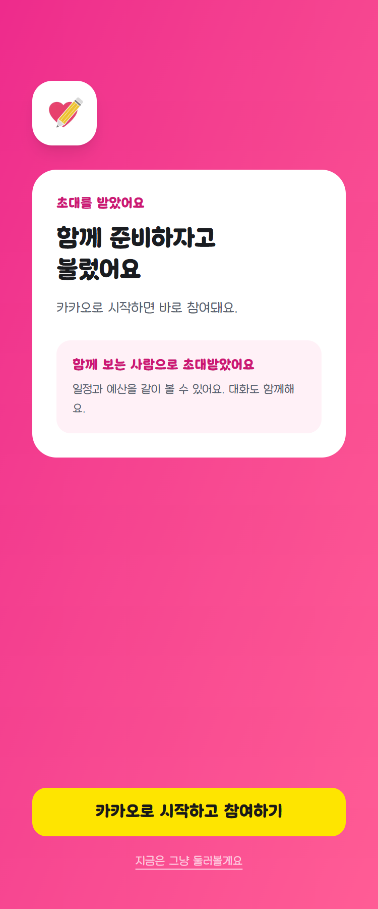
11b
초대 수락
/share/[code]
가장 크게 바뀐 화면입니다. 회색 위 "로그인해
주세요" 모달 하나에서, 누가 왜 불렀는지를 먼저 보여 주는 화면으로.
?as=spouse 는 URL 에 있으니 로그인 전에도 역할을 말할 수
있습니다. 나가는 길(지금은 그냥 둘러볼게요)도 냈습니다.
GuestGate 통과 유지초대자 이름·날짜는 공개 API 필요
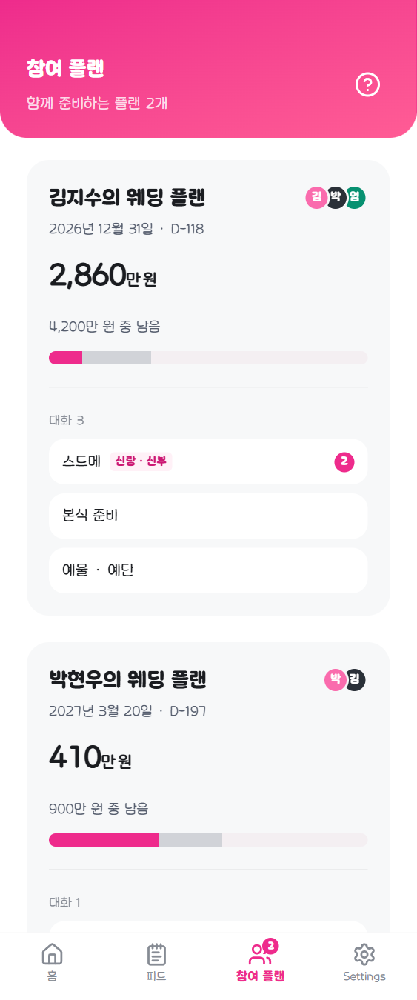
03
참여 플랜
/plan-list
제목 블록이 210px → 88px. 부제를
함께 준비하는 플랜 N개로 바꿔 카드가 첫 화면에 더 들어옵니다.
가이드 앵커 4폭 정상
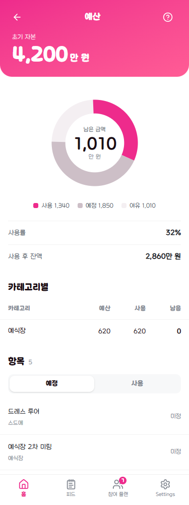
05
예산 상세
/budget-detail
면에는 초기 자본만. 남은 금액은 도넛이 계속
맡습니다 — 두 번째 잔액 숫자를 만들지 않습니다. 카드 위에 떠 있던
뒤로가기 알약이 면 안으로 들어갔습니다.
앵커 4개 · 2열 분기 정상

02
캘린더
/calendar
달 이동과 이번 달 합계가 한 덩이 면으로.
합계는 값이 없어도 폰에서 면의 아래 끝을 맡습니다 — 조건부로 빼면
각진 이음매가 생깁니다(한 번 그렇게 나와 고쳤습니다).
plan-board.cjs 통과FAB → 머리 면 +
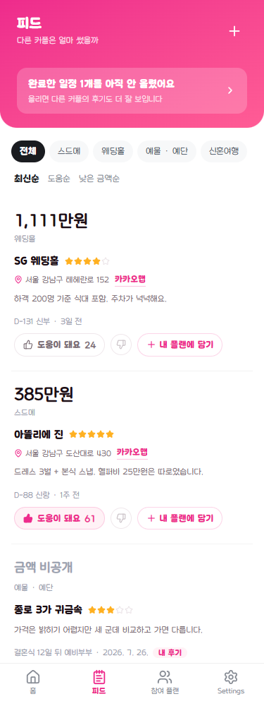
04
피드
/feed
제목과 내 후기 올리기가 면으로. 금액을 세로로
훑는 한 줄 카드 설계는 손대지 않았습니다.
투표·프리필·비공개 금액 통과카드 → 구분선
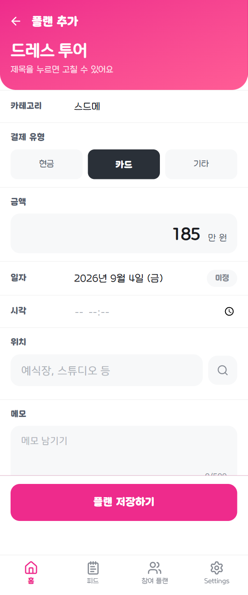
07
플랜 추가
/add-plen
떠 있던 뒤로가기 알약 + 32px/42px 두 줄 제목이
면 하나로 합쳐졌습니다. 화면 위쪽 200px 가까이를 벌어 첫 입력 칸이
올라옵니다. 단계형 흐름은 그대로입니다.
단계형 흐름 유지카드 8장 → 시트 한 장
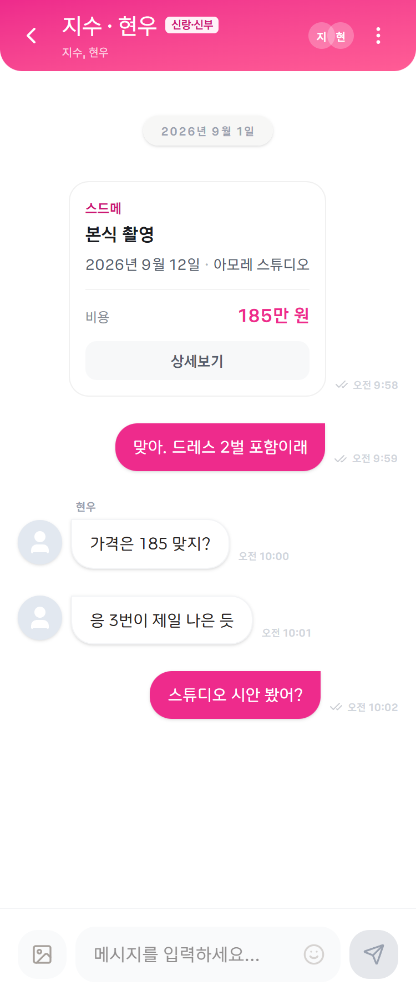
08
채팅방
/chat/[id]
머리글이 면으로. 말풍선은 손대지 않았습니다 —
지금도 내 것만 분홍입니다. pane(웹)은 옆 목록이 흰 바탕이라
예전 흰 머리글을 유지합니다.
pane 분기 유지
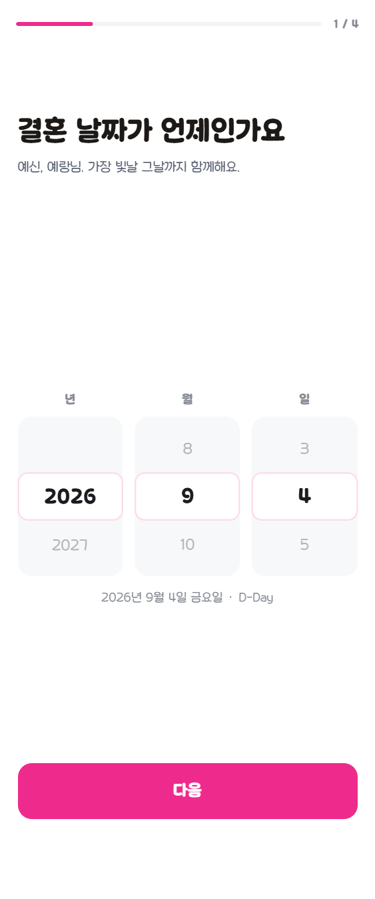
10
온보딩
/setting
면을 달지 않았습니다 — 한 번에 하나씩 묻는
연출이라 위에 분홍 덩어리가 붙으면 질문이 화면의 주인이 아니게 됩니다.
대신 폰에 없던 진행 막대를 냈습니다(질문 단계에만, 연출 화면 제외).
회원 5단계 · 게스트 4단계요청 순서 · ?as=spouse 통과
본문 시각 언어까지 시안에 맞췄습니다. 머리 면·구조에 이어
카드 속까지 SEED 로 바꿨습니다 — 흰 카드+그림자 → #f7f8f9
채움, 파스텔 아이콘 타일 제거, 카테고리를 분홍 칩으로, 중립색을
#1a1c20 / #555d6d / #868b94 로, 그림자는 떠 있는 것에만.
쓰지 않게 된 헬퍼 5개(getCategoryColor·
getDateStatusLabel·PastDateIndicator 등)도
지웠습니다.
검증 중에 기존 문제도 하나 찾았습니다.
scripts/guest-flow.cjs 의 "카테고리 선택" 단계가 실패하는데,
제 변경 전 깨끗한 트리에서도 똑같이 실패합니다(확인함). 하네스가
지금 폼과 어긋난 것으로 보이며, 리디자인과는 별개 건입니다.
← 시안 전체 목차
{kind=link}
{kind=link}
{kind=link}
{kind=link}
{kind=link}
{kind=link}
{kind=link}
{kind=link}
{kind=link}
{kind=link}
{kind=link}